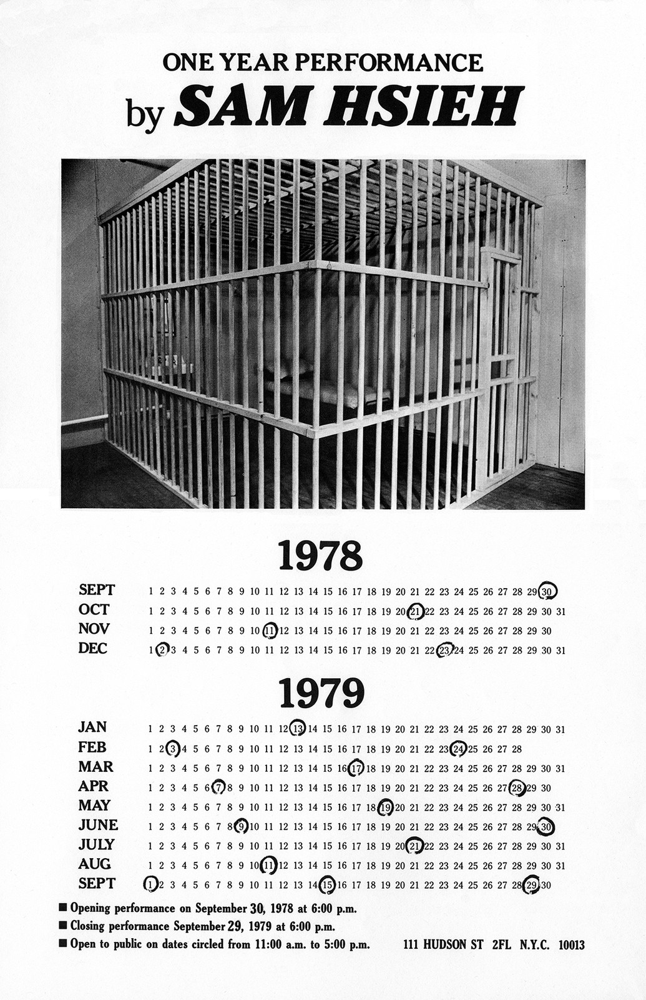
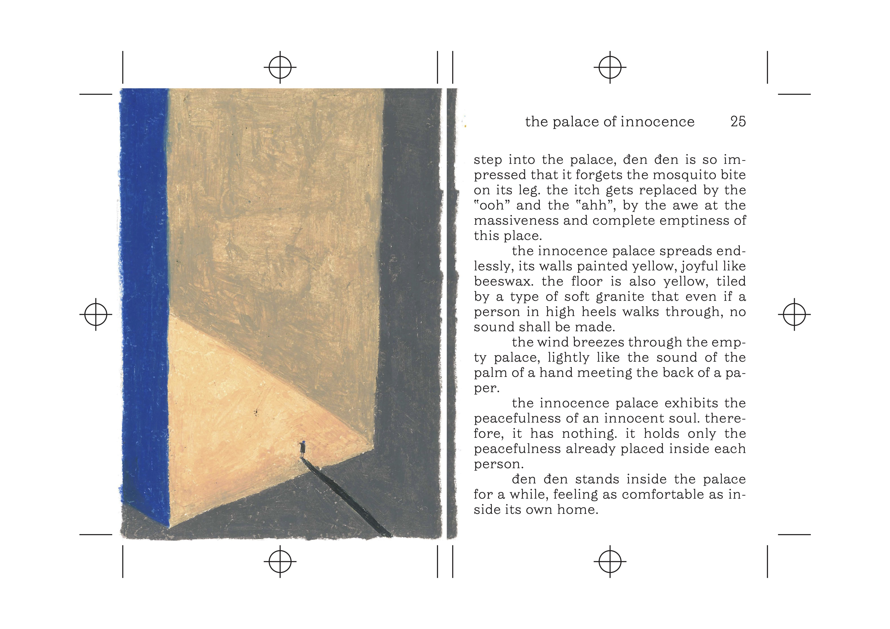
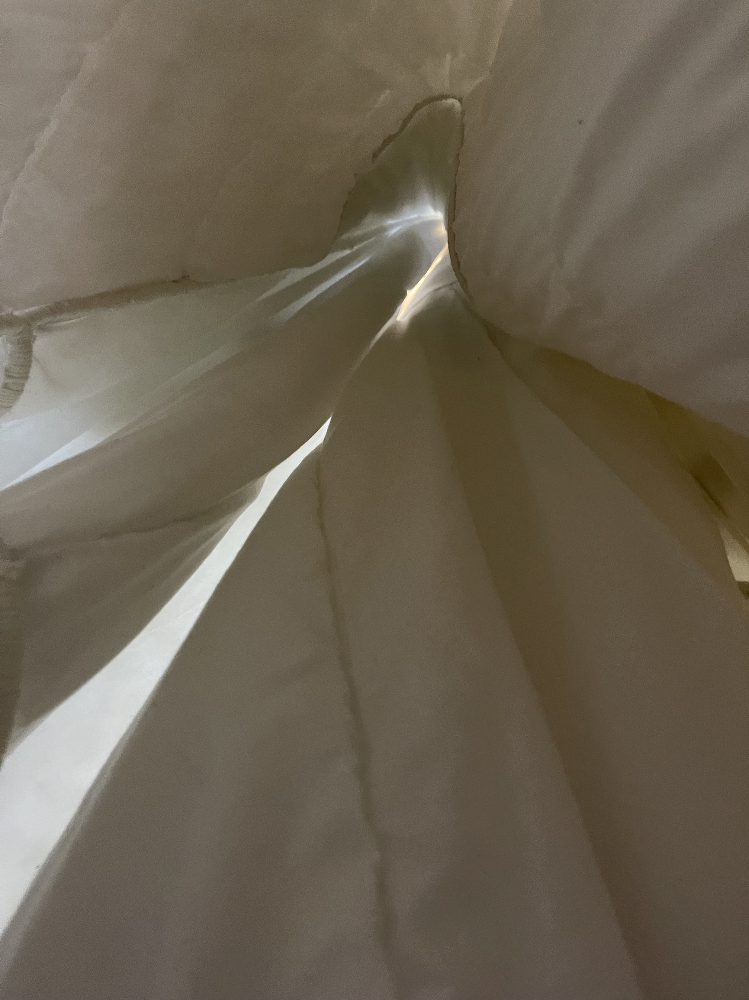
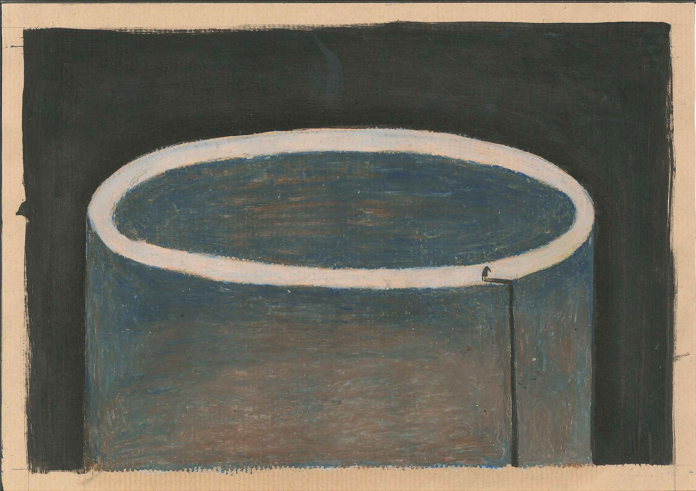
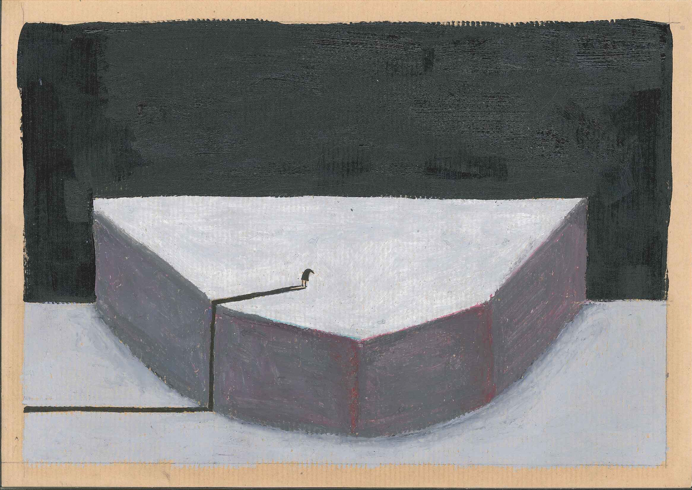
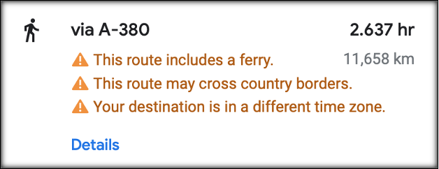
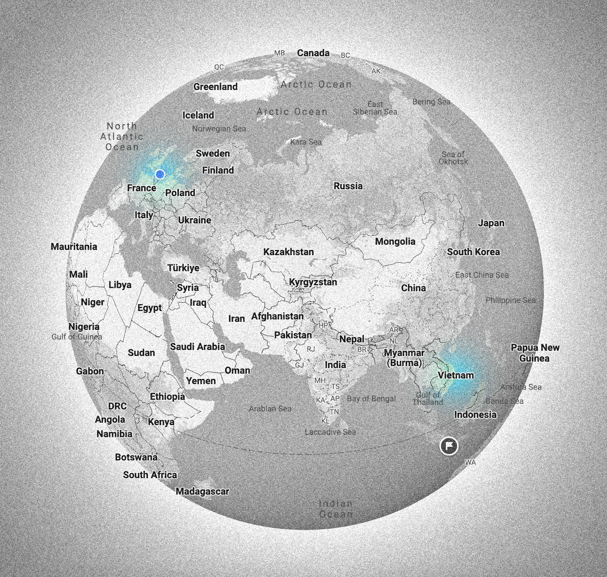

I would like to write about loneliness as a feeling that has a home within me, but also extends into a collective common ground. Moving between interludes of personal writing and theoretical analysis, I want to write about it in a way that both reveals how it feels, but also gives an insight into its reasonings. To give an insight into how loneliness is never individual, but how it takes its form as a public feeling enforced by societal influences.
Abstract
Author: Lê Quỳnh Trang, 80 words
Introduction
Author: Trang Quynh Le, 273 words
My first encounter with solitude was when I was five years old. I woke up in the middle of the night and the nightlight on the wall caught my attention. The dim light was the only living creature of the night. Between dream and reality, I believed I was sleeping next to my grandmother in her bed surrounded by the ultimate tranquillity created by the golden light. Having grown up, I today notice that I am still seeking this particular notion everywhere and in everything I create as a visual creator.
But at the time I was still growing up, I did not know such feelings would later still stay with me. At the time I was still living in Vietnam, I did not predict my relationship to solitude would change. Back then I was comfortable with being alone. However, when I moved to the Netherlands, the feeling of solitude transformed into something else. Something I would today rather name as loneliness. This transformation of a feeling led me to writing and researching the topic of loneliness. I wanted to understand how being alone felt different to me depending on where I lived.
I begin my thesis with an aim of defining what loneliness is and how being alone can manifest itself differently in the form of solitude and/or urban loneliness. Writing personal interludes and analysing an artwork serve as a method of revealing how loneliness feels and how it can be interpreted outside academic theory and statistics. In the end, I look upon loneliness as directly connected to migration and the reasonings behind such connections on a personal and theoretical level.
Chapters 1:
Who is lonely?
Author: Trang Le Quynh Trang, 479 words
In an article published in 1981, Daniel Perlman and Letitia Anne Peplau define loneliness as “a subjective, unwelcome sense of lacking or losing companionship”.Perlman, Daniel and Peplau, Letitia Anne: ‘Toward a Social Psychology of Loneliness’, in Personal Relationships: 3. Relationships in Disorder, London: Academic Press, 1981. p. 32. It’s a feeling that arises when there is an imbalance between the quantity and quality of the social relationships we do have and the ones we desire. But there is a difference between an absence of intimacy within relationships and an embraced time spent alone. A difference Stephanie Dowrick makes a distinction between, as she defines one as loneliness and another as solitude. She frames solitude as being “reasonably comfortable with your own self”, while she defines loneliness as a feeling of being “uncomfortably alone without someone.”Dowrick, Stephanie: ‘Intimacy and Solitude’, London: The Women’s Press, 1992. p.141.
Loneliness and solitude emerge differently in different places; feelings that can be general ones, yet are culturally arranged. Thích Nhất HạnhThích Nhất Hạnh was a Vietnamese Thiền Buddhist monk, peace activist, prolific author, poet and teacher, who, after getting exiled from Vietnam for refusing to support war on both sides, founded the Plum Village Tradition, historically recognized as the main inspiration for engaged Buddhism. Known as the ‘father of mindfulness’, Nhất Hạnh was a major influence on Western practices of Buddhism. Wikipedia. accessed 28 January 2024. elaborates further on the feeling of loneliness as a feeling that is embedded in cultural changes.Hạnh, Thích Nhất: ‘Phần 02: Cô đơn, Nói voi tuổi 20’, Lá Bối, 1966.
In the book “Nói với tuổi 20” published in 1966, Thích Nhất Hạnh blames social regulation and cultural transition along with the stupidity of young adults in Vietnam for their loneliness.Ibid. Splendidly walking out of the war, Vietnam was holistically destroyed. People attempted to build up society while trying to maintain traditional values and catching up with an ever-changing globalisation. This transition resulted in a generational conflict, as parents tried to teach their children outdated values and traditions, while a younger generation was deeply influenced by the new Eastern Western culture. A friction that led to a societal split between generations within a family; resulting in younger people rebelling against an older generation and what they considered outdated values.
It seems that isolation as a feeling arose, as people were caught up in an individual chase of profitable success or as family structures and collective group systems dismantled in the process of a more 'modern' society. A process Thích Nhất Hạnh named “guồng máy” referring to an industrialization of society. Yet an industrialization of society is not only present in Vietnamese history. Within the European context, the use of the term loneliness began increasing after 1800 with the Industrial Revolution.Hill, Samantha: ‘Where loneliness can lead’, AEON, 2020, accessed 28 January 2024. https://aeon.co/essays/
Caleb Burnett elaborates further on the feeling of loneliness within the European context of the Industrial Revolution.‘The Historial Roots of Loneliness’, Cabel Burnett: , UAB Libraries, Vulcan Historical Review vol. 27, 2023, accessed 28 January 2024. https://digitalcommons.library.uab.edu/cgi/ As we shifted from agrarian societies to urban industrial ones in the early nineteenth century, such societal change resulted in a new distinctive formation of loneliness, as people left their families and homes to work in factories. A formation “that was a response to the emerging competitive individualism of modern life.”Ibid. As people left traditional family structures and ways of living together in the countryside, cities on the other hand grew and urban space came to define many people’s ways of living.
Interlude
In my thoughts and within my being, loneliness resembles an empty expansion enclosed by the bounds of an unending circle. This space is enveloped in a white (sometimes grey) fog, perhaps too dense to discern anything beyond the void. It could be that the expanse is equivalent to just 19 square metres.My room in Den Haag, the Netherlands. When I turn 90º to the right followed by 180º to the left and then 90º to the left again, there is an absence of any sign, smell, taste or sound from other beings. Words remain unspoken, as there is no necessity for communication. I'm inclined to believe that I am truly alone in this space.
I wonder what I look like when I feel lonely?It is a social norm for people (in Vietnam) to look calm and collected regardless of how you feel. So it is important to be aware of the image you create of yourself, when others look upon you. Sometimes I try not to appear to be lonely.
How to pretend
not to be lonely
ONE – Delude yourself with the help of the voice in
your head.
Force it if needed: “You are not lonely.”
(Your body is now confused since it cannot lie)
TWO – Repeat step one: “You are not lonely.”
(There is an unsettling numbing sensation starting to crawl up your spine.
It quickly occupies your
back, your neck and then slowly covers your scalp)
THREE – Repeat step two:
“You are not lonely.”
“You are not lonely.”
“You are not lonely.”
“You are not lonely.”
“You are not lonely.”
“You are not lonely.”
“You are not lonely.”
(7 times if you are a man
and 9 times if you are a woman)Borrowed from a Vietnamese folk tip to cure hiccups: slowly swallow small sips of water (7 sips for men, 9 sips for women).
“You are not lonely.”
“You are not lonely.”
The sensation runs from the top of your head to your forehead. It reaches and blurs your eyes. You are completely deluded. You now are able to function like a computer with standard social behaviours programmed in your hard-drive. You entirely rely on your memories rather than reacting upon the surrounding environment. This makes you seem awkward and displaced to others. But it doesn’t matter.
“You are not lonely.”
I am not lonely.
***
MisoSoupDesign: ‘Anti-Loneliness Ramen Bowl’, product design, 2013.
I avoid the temptation to go to a restaurant by myself. I notice how people sometimes eat alone in the restaurant. Most of them are accompanied by a phone. They will hold their cutlery on one hand and their phone on the other. They do look less lonely when they are occupied by something else rather than their food. Perhaps they feel less lonely or feel less in general, when they are distracted by another dimension. Cecilie told me how she in China often noticed couples eating across the table from one another, but both staring at their phones. I wonder if there is still intimacy within these intimate settings? Is it an act of being solitude with each other or an escape from mandatory interactions?
I would rather get take-out, then eat at home alone with my phone.
") Hopper, Edward: ‘Nighthawks’, oil-on-canvas painting, 1942.
Hopper, Edward: ‘Nighthawks’, oil-on-canvas painting, 1942.
Chapter 2:
Urban Loneliness
Author: trangle, 1342 words
Edward Hopper finished painting titled Nighthawks in 1942. A painting portraying four people at a diner at night; a man wearing a white hat behind the bar, a woman eating, a man smoking a cigarette and a man with his back against the window. As a viewer you are left to the position of gazing through the window, as if you were passing the street late at night. An empty urban streetscape illuminated by the light provided by the diner. As the urban space is left dark, a viewer’s gaze is immediately directed towards the diner. Four people are sitting together, but even when sharing a space, a feeling of alienation and loneliness still exists, as the four of them live their own existence in a shared space, but separate and apart. Four people sit together, but their interactions are little. A woman and a man sit next to one another and even though their hands are almost touching, they are not. A key indicator of being together, yet also not, as they are both starring ahead of them and the only possible connection is a disconnected one.
The colour palette of warm toned brown, orange and yellow colours together with cold tones of dark green and dark blue has a similarity to Vincent Van Gogh’s painting The Night Cafe. A painting that historically has been known for using a similar colour palette that gave an “illusion of vibration and dissonance within the space.”Rose, Michael, ‘Looking at Vincent Van Gogh’s The Night Café’, Michael Rose fine art, 2019, accessed 1 February 2024. https://www.michaelrosefineart.com/
Within his paintings, Edward Hopper often touches upon similar topics of urban living, as he routinely reproduced “certain kinds of spaces and spatial experiences common in New York that result in being physically close to others but separated from them by a variety of factors including movement, structures, windows, walls and light or darkness.”Observations by Whitney curator Carter Foster.
Yet according to himself, it was never a conscious choice of wanting to depict a certain experienced alienation. Instead he phrases it as "unconsciously, probably, I was painting the loneliness of a large city.” Nighthawks is one of his many paintings depicting the loneliness of a large city. Hopper points out how it might not have been a direct conscious choice, but Nighthawks was painted in 1942 in the years following the Great Depression.Money, Britannica, ‘Great Depression’, accessed 1 February 2024.
https://www.britannica.com/money/Great-Depression
But 1942 was also the year, where the US involvement in World War II was at its highest.Zappella Christine, ‘Wartime alienation, Hopper’s Nighthawks’, accessed 03 February 2024.
https://smarthistory.org/seeing-america-2/nighthawks-sa/
As a painting, Nighthawks is therefore socially conditioned and reveals socio-political layers of society at a time of alienation, where the economy was recovering and women and men were sent to war.
a A CONTEMPORARY NIGHTHAWKS
Nighthawks is a painting from 1942, but the relationship between urban space and loneliness is still present today. Urban spaces are full of people, as more and more choose to move to cities. Today 56% of the whole population on Earth live in cities.‘Urban Development’, The World Bank, accessed 3 February 2024. But a collective movement of moving to cities does not guarantee togetherness and collectivism.
Urban loneliness is a term that describes lonely individuals living in cities; an intersection between a mental state and the built environment. A phenomenon that Barbara Taylor describes as rooted in the alienating and estranging nature of modern society. To Taylor, the pace of technological innovations have come to redefine the way we live, work and play. And so it has come to redefine and distinguish our current century from previous ones. Simultaneously, such pace of innovations has led to a career-focused and fast-paced lifestyle in urban cities leading to us spending less time together, spending less time on maintaining our relationships and forming less bonds with other people as well.
In the past, individuals depended on tribalism and organic social connections that naturally formed within small groups rather than larger societies. There has been a shift from living in suburban settings, where the emphasis was on residing in close-knit communities with kin, to embracing the urban lifestyle that glamorises sleek downtown condominiums and one-bedroom single pads. While living alone doesn't inherently imply loneliness, individuals in such situations often find themselves spending increased periods in social isolation within their homes and may lean towards solitary activities.
b AN ISOLATION LOOKING LIKE LONELINESS,
BUT HOW WILL I EVER KNOW?
An extreme example of urban solitude is hikikomori; a form of profound social withdrawal, commonly observed in Japan. A kind of migration away from the city. As a term it was coined in 1998 by Japanese psychiatrist Tamaki Saito.Like many named social syndromes, Tamaki Saito’s Hikikomori defines this specific social behaviour by observing the appearance of the syndrome. The problem is when people, informed by psychiatrists, statistics and media, acknowledge Hikikomori as a mental issue while it is proved unlisted as a mental issue scientifically. In a blogpost from Hikipos.com–a site where people living as Hikikomori share their life experiences, one blogger mentioned “the journalists have been unnecessarily agitating the 8050 issue(*), causing anxiety to the people involved and their families”. The problem of Hikikomori is not only about the person who chooses to seclude themselves from the society but also the society decides to exclude them. On a TV program by NHK, Vosot Ikeida, a Hikikomori activist, mentioned: “Hikikomori is not someone to be talked about, but to talk”.
(*8050 Issue: Issued by Japan government–One of the main social/economic problems caused by the ageing of hikikomori in Japan. It refers to the problem that arises in a family with hikikomori, of which parents are in their 80's and children are in their 50's.)
Andon, Hiru; Ikedai, Vosot: ‘Not a Mental Illness, Just I don’t feel like Working!’ - Frustration and Despair of Middle-Aged Hikikomori’, Hikipos, 2021, accessed 14 February 2024.
https://www.hikipos.info/entry/2021/04/29/063000
McCurry, Justin: ‘Isolation Nation: Japan tries to draw its citizens out of Post-Covid seclusion’, The Guardian, 2023, accessed 14 February 2024.
https://www.theguardian.com/world/2023/may/12/isolation-nation-one-in-50-japanese-living-in-seclusion-after-covid
Hikikomori (derived from the verb hiki ‘to withdraw’ and komori ‘to be inside’) means ‘pulling inward’, 'being confined’, or known as severe social withdrawal.Sohamasaki, Yukiko; Pionnié-Dax, Nancy; Dorard, Géraldine; Tajan, Nicolas; Hikida, Takatoshi: ‘Identifying Social Withdrawal (Hikikomori) Factors in Adolescents: Understanding the Hikikomori Spectrum’, Child Psychiatry & Human Development ,2020. p. 52.
The term involves adolescents and young adults who become reclusive in their parents’ homes, refuse to attend school or work for months or even years at a time.
In 2021 statistics show that almost 1.5 million people of working age (1 of 50 Japanese) in Japan live like hikikomori according to the Japanese Cabinet Office. These included the hikikomori who were at that time in their 40s and had spent 20 years isolating in their bedrooms.Japanese Cabinet Office Seikatsu Joukyou ni Kansuru Chousa: ‘Investigation on Living Conditions’, 2019, accessed 7 February 2024.
Hikikomori individuals often grapple with intense feelings of anxiety, depression or societal pressure, prompting them to retreat from social interactions. Media reports and documentaries on recovered hikikomoriIt is difficult to approach a hikikomori since they restrict social interaction with anyone else rather than their parents.
capture the intensive sense of psychological distress and anxiety felt by hikikomori. Certain personality traits such as shyness or a lack of assertiveness are thought to elevate the risk of experiencing this syndrome. The highly competitive education system is believed to contribute to hikikomori among teenagers.The Indian Express: ‘What is Hikikomori, the phenomenon affecting 1.5 million people in Japan?’, 2013, accessed 7 February 2024.
https://indianexpress.com/article/lifestyle/health/
However, the primary nexus of hikikomori revolves around the transition from youth to the responsibilities and expectations of adulthood. As many modern East Asian societies, Japan bears the social conditions of anomieIn sociology, anomie is a social condition defined by an uprooting or breakdown of any moral values, standards or guidance for individuals to follow.
‘Sociology’, John J. Macionis, Linda M., Pearson Canada, 2010. p. 97.
that exerts a great deal of pressure on adolescents to be successful and perpetuate the existing social status quo. It appears that advanced industrialised societies, like modern Japan, struggle to offer sufficient meaningful transformation rituals to guide youth into mature roles.
Having gone so much in depth with the term hikikomori, getting lost in the internet’s ocean of information, I started questioning why I was so fascinated by the term. What were my research urges? I asked myself. I came to some kind of conclusion that deep down my motivation lied in the curiosity of whether or not people living like hikikomori felt lonely. If their aloneness was a solitude or despair from a social life. I did not come to a conclusion and sometimes there is no such thing as a fixed conclusion – especially of the emotional kinds. How would I ever know as an outsider, if someone else from an outside carried a certain loneliness?
Even within statistics, the term hikikomori mostly remains within numbers. Every study is very limited, when people living like hikikomori made a choice of denying all contact. Yet even within the studies that do remain, an emotional kind of research is limited. How would researchers with the purpose of making statistics ever fully know, if they never lived like them?
Not only did I come across statistics and numbers in my search online, but I also ended up finding a variety of different communities of people feeling lonely and living as hikikomori online. People that formed communities online, when they felt lonely offline. I mentioned my interest in hikikomori to my friend and to my surprise, she immediately knew of it and showed me a whole group of more than 500.000 members existing on VK.comVK is a Russian online social media and social networking service based in Saint Petersburg. VK is available in multiple languages but it is predominantly used by Russian speakers.
Wikipedia: ‘VK (service)’, accessed 7 February 2024.
https://en.wikipedia.org/wiki/VK
called ‘Hikkikomorii’. Followers receive updates of posts about experiences with social isolation, their reasons behind their decisions and how they feel in their daily life. Hikipos.infoHikipos, accessed 7 February 2024.
https://www.hikipos.info/
is another website forming such a community online; a Japanese website with people sharing similar experiences as in the group dedicated to hikikomori on VK.com.
I might never know if those people feel lonely or how it feels to live like them, but coming across such communities online, I can only interpret that even when living like hikikomori, people still seem to desire some social contact in one form or another. And even when living socially isolated offline, people still form a community around such isolation online.

Tehching Hsieh’s first One Year Performance starting from late 1970s and early 1980s.
Photo by Cheng Wei Kuong.
The piece is officially named "Cage Piece", is a seminal artwork by Tehching Hsieh, an immigrant artist from Taiwan. Created in 1978, the piece involved Hsieh living inside a wooden cage in his loft apartment in New York City for a whole year. The cage measured only about 11.5 feet by 9 feet, and Hsieh documented his experiences through photographs and written records. As an immigrant, Hsieh grappled with themes of confinement, isolation, and the search for personal freedom, which are evident in his performance art. "Cage Piece" reflects Hsieh's exploration of the limits of human endurance and the impact of physical and psychological constraints on the individual. Through this piece, he invites viewers to contemplate the nature of existence and the societal structures that confine us, both physically and metaphorically.
Anh, Quỳnh Dương and Trang, Quỳnh Lê: ‘the palace of innnocent’, Đen Đen is everywhere, 2017. p. 25.
Interlude
In 2017, Đen ĐenMeans “Black Black”. In Vietnamese, things are said twice to mean less. Named and pronounced by Dương Quỳnh Anh. The alter ego was later made into a children's book named ‘Đen Đen is everywhere’ under the collaboration called Dưa&Ze. https://www.instagram.com/duaandze
was made out of oil pastels on paper as my alter ego. Inspired by Odenera Punpun, the main character in a manga called Goodnight PunpunGoodnight Punpun (Oyasumi Punpun) is a Japanese manga series written and illustrated by Inio Asano. Goodnight Punpun explores themes such as depression, love, trauma, social isolation, death, and family, and follows the life experiences of Punpun Onodera, a young boy living in Japan, as well as a few of his friends. One day, Punpun falls in love at first sight with a transfer student, Aiko Tanaka, who comes to his class. Punpun heard from her that “Earth will soon become an uninhabitable planet'' and “Humanity will die if we don't move to another planet,'' and in his “Dream for the Future'' essay that was submitted today, Punpun decided to write, “I want to be a person who studies space.'' But the next morning, when Punpun woke up, an incident happened in his household that changed his life for good.
Wikipedia, accessed 2 February 2024. Goodread, accessed 2 February 2024.
, Đen Đen inherits Punpun’s appearance in the form of a crudely drawn bird. However, instead of being born in an ordinary middle-class dysfunctional family in Japan, Đen Đen was born from thin air and nests somewhere inside my emptiness. Đen Đen is believed to be absolutely innocent with eyes of nothing else but curiosity toward knowing himself and the world around him.
He is always alone, but he never questions his lonesome existence.
He seems to be satisfied with his current situation, because there are an infinite amount of possibilities happening in the emptied world. Đen Đen is tiny. His shadow is stretched infinitely to the edge of the painting, depicting the light source and revealing the hint of the place’s immensity.
Đen Đen was born from a childhood imagination of an empty warm spaceThe empty warm space: a mental safe space created based on a specific memory: the moment when I was lying on the bed next to my grandma. There was a night lamp with dim yellow light on the wall. After a long while, my memory though disfigured, the warm sensations of the memory vividly nest in my brain manifested into the form of Đen Đen’s world where infinite tranquillity exists along with absolute silence. Besides Đen Đen’s project, I had an attempt to recreate the memory and called it “Of A Constant Dream”. The title refers to the ever-changing existence of a memory.
Image & Theory course, ‘ROOTS’ Exhibition, Royal Academy of Art, The Hague, 2022.
https://roots.kabk.nl/b/works/trang

as an escape from the public, collective-minded and culture-bound customs engraved in the chaotic reality.
Anh, Quỳnh Dương and Trang, Quỳnh Lê: ‘…’, Đen Đen is everywhere, 2017.
Anh, Quỳnh Dương and Trang, Quỳnh Lê: ‘storm barrier’, Đen Đen is everywhere, 2017.
In Vietnam, privacy is a slippery and strange concept that no one discusses verbally.
I grew up desiring to have a door to close. For more than 20 years,Like other typical Southeast Asian families, my parents planned to keep me in the house till I would be married to another family. If I am a boy, I will be destined to stay with my family for good. I shared a room without a door with my little sister. The room was around 10 square metres. There was a queen-sized bed, two working tables and a wardrobe, in which two adults could fit. The furniture created two 40 centimetre-wide narrow paths: one led to a tiny balcony and one just wide enough to open the wardrobe without hitting the wooden bed frame.Our home is a typical small row house. This type of house is common in urban cities with high population density. My parents, who didn’t understand their teenage daughter need for privacy,Which was influenced by Western pop-culture that glorifies individualism and personal expression. couldn’t comprehend neither her rage over their frequent random checking on her room as an (natural) act of caring nor her impulsive need to leave the family.
Finally I had a door to close when I moved to The Hague. The room was 19 square metres with all furniture hand-picked from walking trips around the neighborhoods. A single bed, a sofa, a working table and a closet with three shelves. I was sitting on the edge of the bed and looking around the room I had to myself, when the emptiness kicked in. It wasn’t the tiny, shared room where I had to create multiple secret corners to hide my erotic drawings (not from my little sister but from my parents' unexpected check-ups). There was no one there for me to fight over the bed territory or throw anger at, when they invaded my privacy. In that moment I realised my individuality was not the same as the individualism I experienced in the Netherlands. My individuality was rooted deeply in a lifestyle of togetherness, where everyone cares (a little too much) about each other’s existence. My desire for privacy or space of Đen Đen only exists in the doorless 10-square-metres room.
Interlude
Friends and cousins came to say farewell. There were about 15 people on the 20 square-metres floor,including the kitchen and a huge fridge.
which meant each person had about 1,3 square metres personal space.The metro area population of Hanoi in 2020 was 8,3 millions. The population density of Hanoi city is 2,511 people/km2—Being alone is either an idea of paradise or non-existent.
Statistical Yearbook of Vietnam 2020, General Statistics Office of Vietnam, Statistical Publishing House, 2020, p.109, p.105.
Mom cooked dinner for all of us. She told me she was only happily cooking when someone was there enjoying her food.
I was not used to saying goodbye. I held my tears exceptionally long because I am ugly when I cry. I checked in the mirror: My facial muscles were swollen to the extreme. My cheeks and my nose turned tomato red. My eyes disappeared behind the caterpillar-like eyelashes soaked in water. My vision was full of the flash-speed memories of the past 23 years interwoven with the future memories, which I would never know of and never be included in. It was not the first time I flew away from home, but was it the farthest and the longest one: 9,632 km by air or 11,658 km on the road.
 
Google Map, Hanoi, Vietnam to Amsterdam, the Netherlands. Accessed 7 February 2024.
https://www.google.com/maps/dir/Hanoi,Vietnam/Amsterdam/
Moving very far away had always been my dream, since I was a child. By the time I waved the last wave to my parents and siblings, I still cried. Mom, who had been holding her tears for her entire life, could not hold it for any longer. “Don’t cry”, she told me in Vietnamese. “There is no need to cry.”Southeast Asians have a reputation for being fun-loving, compassionate, gentle, hospitable, open-minded, laid-back, smiling and friendly; there is a prevailing sentiment that life should be enjoyed at the moment and problems should not be taken so seriously that they disrupt enjoyment.
“Asian Moral Character/Behavior”, in the course of Ethics, National University (Philippines), academic year 2023–2024. I saw dad cry for the third time in my life. His tears were quiet, almost hidden. As his daughter, I know there are only two kinds of situations, in which his face turns red: When he is drunk and when he cries. We all shed tears for the lonelinessLoneliness is viewed as a serious threat to society in Vietnam. A solitary lifestyle is generally undesirable, particularly for vulnerable and desperate elders who lack the strength to care for themselves. The term "Người già neo đơn" (Lonely elderly people) specifically refers to those who face the prospect of dying alone–a misfortune–which makes parents put pressure on their children to marry and bear children.
I have always been yearning for in the Global North.
Chapter 3:
A Desire for "The Happy Life"
Author: o0ozeo0o, 521 words
Moving to a city, a foreign country; a place where I know no one from the beginning, it’s difficult to dissociate a certain loneliness with being new in a new place. Meeting people stay within institutional and paid spaces and to enter any has a prize of capital; not only your living space, but also educational and institutional ones. We pay to be together, or if we do not pay, we get paid by spending our time in a working space. Time has been labelled a capital and wherever we move through, some kind of capital has been involved. Even socialising and being in a togetherness today involves an exchange of capital, as we pay when we drink a coffee with our friend and as we form relationships by moving through paid educational spaces.
In the book ‘Cruel Optimism’, Laurent Berlant starts her writing with: “A relation of cruel optimism exists when something you desire is actually an obstacle to your flourishing.”Berlant, Laurent: “Cruel Optimism”, Duke University Press 2011, p. 10. A desire for things that are bad for us; whether such desire is smoking, a kind of toxic love, a fantasy of ‘the good life’ or subjects that on a surface promise you some kind of improvement of living. But Berlant states these relations are not directly cruel, but “they become cruel only when the object that draws your attachment actively impedes the aim that brought you to it initially.”Ibid.
In Vietnam where I am from, a certain internalised racism exists, as standards are measured by Europeanness and moving to Europe is portrayed as some kind of idealised improvement of living. As such, leaving where you are from to pursue a dream of another living, is what Berlant would consider a cruel optimism.
Sara Ahmed points towards a relationship between a promise of happiness, an unhappy racism and migration in her book ‘The Promise of Happiness'.Ahmed, Sara: “The Promise of Happiness”, Duke University Press 2010. A certain societal standard of happiness is what directs us towards making certain decisions in life. But when it comes to the standardised idea of happiness, one question remains:
Whose standards are we measuring happiness by?
Sara Ahmed points to how happiness as a mission is a colonial mission, where a native culture perceived as miserable serves as justification for colonial missions:
“For happiness to become a mission, the colonised other must first be deemed unhappy. The imperial archive can be considered as an archive of unhappiness. Colonial knowledges constitute the other as not only an object of knowledge, a truth to be discovered, but as being unhappy, as lacking the qualities or attributes required for a happier state of existence.”Ibid, p. 125.
According to Ahmed, colonialism is justified as a happiness mission of redirecting people to a dominant culture. So, the colonial project is a redirection that is justified as ‘teaching people how to be happy’. But happiness is not only measured by a dominant colonial culture, it is also a binder for nationhood, as Ahmed mentions how “happiness is still used as a technology of citizenship, as a way of binding migrants to a national ideal. To be bound to happiness is to be bound by what has already been established as good.”Ibid, p. 133.
Conclusion
Author: b̵̯̈ļ̴́ǘ̷̡e̴̳͑_gh0st, 349 words
Having left the country, from which I am from, I am now questioning the reasons why I left besides the 'better' education. But my own reasoning is never that individual. Having written about loneliness as a public feeling and as a result of migration the past few weeks, I now see patterns between my own feelings and societal movements like urban loneliness.
One question is: Why did I leave?
Another question is: Why do people in general leave? People move from one place to another with the desire for the ‘better’. A standardised idea of what a happy life is supposed to look like – often in close relationship with a financial desire for a practical improvement of living. Laurent Berlant stated that things we desire that end up being an obstacle for our happiness are a kind of cruel optimism. Maybe me leaving Vietnam was such a cruel optimism. But such a leaving is attached to a bigger societal picture. Sara Ahmed pointed to the concept of a promise of happiness. How certain objects and subjects carry a promise of happiness, but how such are political. People leaving where they are from, is never neutral, as the desire for what has been established as good and the happy life is never neutral.
I researched different kinds of loneliness in the form of solitude, urban loneliness and hikikomori as one example of such. Urban loneliness and hikikomori both being the results of some kind of migration. But reading about something is different from living it and therefore feeling it. I will never know from second sources how people feel, but I do recognize the patterns of how even people make a choice of either isolation or leave where they are from, it can never be separated from people still carrying a social need for contact in one form or another.
Loneliness might often be perceived as an individual private feeling, but researching it and writing about it, I now see it as having a collective common ground. Loneliness is never fully alone. In the end, it’s a public feeling imposed by societal impacts.
Conclude
Sonya told me: “When I was travelling alone, I realised that I really like to be alone somewhere else, because I can decide everything for myself. I don’t have to compromise with anyone. But at the same time this realisation makes me feel quite sad about being alone, because I don’t have anyone to share this experience with. I don’t have anyone to share this memory with. So it makes me feel like the memory can only exist, when you share it with someone else, because then there is always another person reminding you that something happened. If you are alone and you forget something, then it’s gone forever.”
There was an unwanted poignant longing invaded my ribcage territory while I was listening to Sonya telling me about her travel from The Hague to Berlin. I found it profoundly sad, because the story came from a cheerful warm-hearted Sonya. Did she meet anyone on her way? And did those people fail to enter her heart? I see myself in her eyesight filled with joy and emptiness; missing someone that does not exist. A forgotten memory leaves a void with a peculiar sadness. This sadness is a yearning for the lost. To keep yearning is to keep desiring what one does not even remember one had in the first place, as the memory was lost. One continues to create memories and fails to maintain it. Loneliness becomes a moulded vessel, which we silently preserve for someone else.
In the middle of the class meeting, Diana texted me: “a cold empty feeling in your chest, it's being on the beach on a gloomy day and ur skin exposed to the wind.”
Diana mentioned the cold (no)thing nesting in her chest. She was on the beach, when the sky turned grey and the wind touched her skin. I pondered whether the chill on her skin, exposed to the wind, mirrored the cold void within her chest. For a moment, I couldn't comprehend. I asked her if she wanted to talk more about it. She agreed. However, we never mentioned it again.
Bibliography
9 books, 12 sites
Ahmed, Sara: ‘The Promise of Happiness’, Duke University Press, 2010.
Anh, Quỳnh Dương and Trang, Quỳnh Lê ‘Đen Đen is everywhere’, 2017.
Berlant, Laurent: ‘Cruel Optimism’, Duke university Press, 2011.
Dowrick, Stephanie: ‘Intimacy and Solitude’, London: The Women’s Press, 1992.
Hạnh, Thích Nhất: ‘Nói voi tuổi 20’, Lá Bối, 1966.
Laing, Olivia: ‘The Lonely City: Adventures in the Art of Being Alone’, Picador, 2016.
Macionis, John J.: ‘Sociology’, Linda M., Pearson Canada, 2010.
Perlman, Daniel and Peplau, Letitia Anne: ‘Toward a Social Psychology of Loneliness’, in Personal Relationships: 3. Relationships in Disorder, London: Academic Press, 1981.
Sohamasaki, Yukiko; Pionnié-Dax, Nancy; Dorard, Géraldine; Tajan, Nicolas and Hikida, Takatoshi: ‘Identifying Social Withdrawal (Hikikomori) Factors in Adolescents: Understanding the Hikikomori Spectrum’, Child Psychiatry & Human Development, 2020.
Andon, Hiru and Ikedai, Vosot: ‘Not a Mental Illness, Just I don’t feel like Working!’ - Frustration and Despair of Middle-Aged Hikikomori’, Hikipos, 2021,
accessed 14 February 2024.
https://www.hikipos.info/entry/
Burnett, Cabel: ‘The Historical Roots of Loneliness’, UAB Libraries, Vulcan Historical Review vol. 27, 2023,
acessed 28 January 24. https://digitalcommons.library.uab.edu/cgi/viewcontent/
The Indian Express: ‘What is Hikikomori, the phenomenon affecting 1.5 million people in Japan?’, 2013,
accessed 7 February 2024. https://indianexpress.com/article/lifestyle/health/hikikomori-japan-1-5-million-people-social-isolation-mental-health/
Japanese Cabinet Office Seikatsu Joukyou ni Kansuru Chousa: ‘Investigation on Living Conditions’, 2019,
accessed 7 February 2024.
Hikkikomorii,
accessed 7 February 2024.
Hikipos,
accessed 7 February 2024.
Hill, Samantha: ‘Where loneliness can lead’, AEON, 2020,
accessed 28 January 2024.
https://aeon.co/essays/for-hannah-arendt-totalitarianism-is-rooted-in-loneliness/
McCurry, Justin: ‘Isolation Nation: Japan tries to draw its citizens out of Post-Covid seclusion’, The Guardian, 2023,
accessed 14 February 2024.
Money, Britannica: ‘Great Depression’,
accessed 1 February 2024.
Rose, Michael: ‘Looking at Vincent Van Gogh’s The Night Café’, Michael Rose fine art, 2019,
accessed 1 February 2024.
https://www.michaelrosefineart.com/blog/2019/9/30/looking-at-vincent-van-goghs-the-night-cafe/
Teo, Alan; Gaw, Albert: ‘Hikikomori, A Japanese Culture-Bound Syndrome of Social Withdrawal? A Proposal for DSM-V’, National Library of Medicine, 2010,
accessed 14 February 2024.
https://www.ncbi.nlm.nih.gov/pmc/articles/
Zappella Christine: ‘Wartime alienation, Hopper’s Nighthawks’,
accessed 3 February 2024.